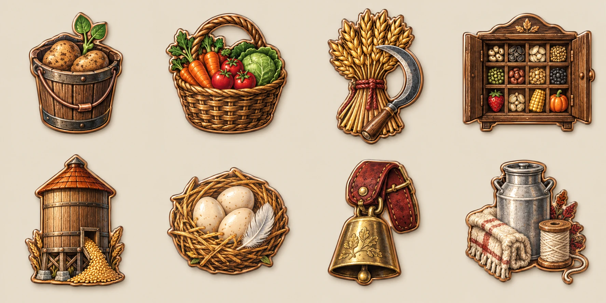
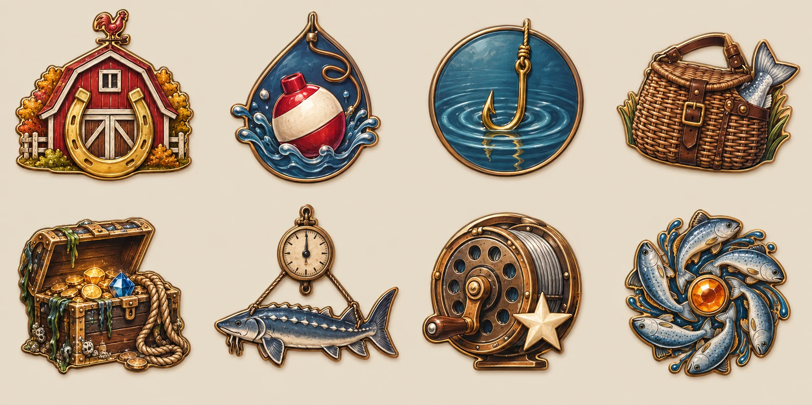
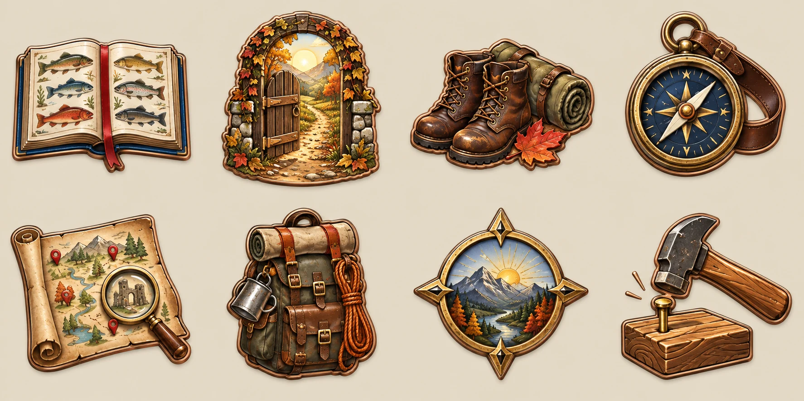
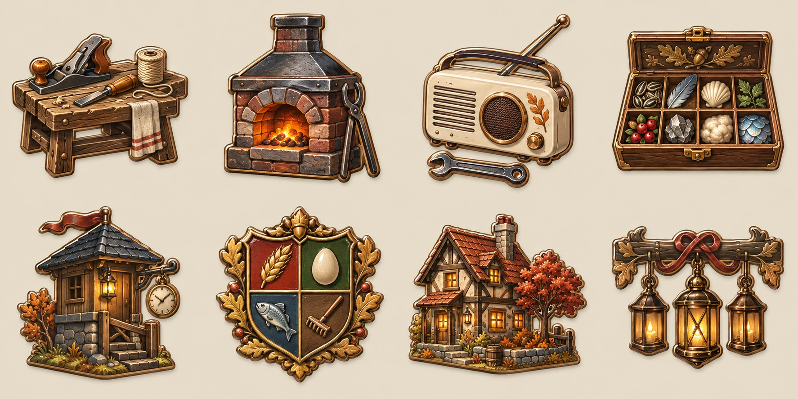

每一项成绩，都有自己的图案。
32枚独立徽章 · 六类成就 · 不复用图案 · 仅配图总览，不读写存档
返回可操作的小农场预览 ›
种植

第一桶粮
菜篮渐满
百谷丰登
十二畦的颜色
四季粮仓
牧场
清晨的馈赠
牧场好手
围栏里的日常

丰饶牧场
垂钓
浮标第一次下沉
稳稳收线
老练渔夫
钓线另一端
沉甸甸的一竿
水面无声
百尾归篓

水域博物志
探索
推开院门
熟悉的小径
废土旅人
地图之外
旧路新生
余烬地图
工坊
第一件手作

手作达人
炉火不息
万物皆可修补
经营
田园图鉴
有人照看的家
末世庄园主
小院长成
守望相助